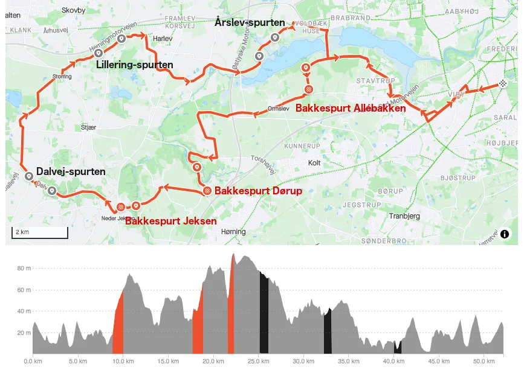

10-år jubilæum
OBS:27/4: TILMELDINGEN ER LUKKET
Squadra Molteni har i 2024 10-års jubilæum – og det skal fejres!
Derfor afholder vi Squadra Moltenis 10-års Jubilæumsløb, lørdag 25. maj 2024, kl. 11.00 på Aarhus Cykelbane.

Squadra Moltenis 10-års Jubilæumsløb køres som et gentelmanrace over ca 50 km. Undervejs er der 6 indlagte zoner, hvor der køres race.
⇨Tilmelding her
Bjergkonkurrence og sprintkonkurrence
Der er 3 zoner, hvor der køres efter bjergpoint – og 3 indlagte zoner, hvor der køres efter sprintpoint. Der samles op efter hver zone – og mellem zonerne køres der neutraliseret.
Der vil altså blive kåret nummer 1, 2 og 3 i en bjergkonkurrencen og nummer 1, 2 og 3 i en sprintkonkurrencen.
Rutekort og profil


Spurterne
Starten på hver spurt vil blive vinket i gang af masterbilen.
Bakkespurterne starter i bunden af bakkerne – og målet er der hvor masterbilen holder og racemaster vinker med målflaget.
De almindelige spurter starter, når masterbilen vinker spurten i gang (ca. 1000 meter før) – og målet er der hvor masterbilen holder og racemaster vinker med målflaget.
1000 m på tid
Ved ankomst til Aarhus Cykelbane vil sidste, og måske aller mest klassiske disciplin blive kørt: 1000 meter på tid (3 omgange på cykelbanen).
Der køres som individuelt forfølgelsesløb (to ryttere dyster mod hinanden, idet de starter på hver sin side af banen). Hver rytter får en tid – og der kåres nummer 1, 2 og 3 af alle startende.
Der køres på landevejscykel.
Stumpemarked
Der vil også være mulighed for at sælge og/eller købe gamle stumper. Medbring dine stumper og sælg løs.
Grill, hygge og musik
Dagen sluttes af med grillfest, hygge og musik.
Præmieoverrækkelse og …
Der vil under grillfesten være præmieoverrækkelser – og det kan værre, at der kommer et par surprise indslag og konkurrencer…
Tilmelding
Tilmelding til Squadra Moltenis 10-års Jubilæumsløb åbner 1. oktober kl. 10.00.
Minimum og maximum
Der skal være mindst 30 deltagere til Squadra Moltenis 10-års Jubilæumsløb. Ved for få tilmeldte aflyses.
Tilmeldingen lukker ved 50 tilmeldte.
Regler
Squadra Moltenis 10-års Jubilæumsløb er et vintage- og retro løb, så der må køres på stålcykler eller alluminiumscykler fra perioderne:
1970’erne eller før, 1980’erne eller 1990’erne (inkl. STI/ERGO).
Rytterens påklædning skal passe til cykelens alder.
Pris
Inkluderet i prisen er: gentlemanrace med bjergkonkurrence og sprintkonkurrence, 1000 meter på tid, grillfest, drikkelse og hygge ad libitum
Pris #1 (tilmelding fra 1. oktober 2023 til 1. november 2023): 225 kr
Pris #2 (tilmelding fra 2. november 2023 til 1. marts 2024): 300 kr
Pris #3 (tilmelding fra 2. marts til 1. maj 2024: 350 kr
Tilmeldingen lukker 2. maj 2024 – med mindre 50 deltagere er opnået før. ER LUKKET